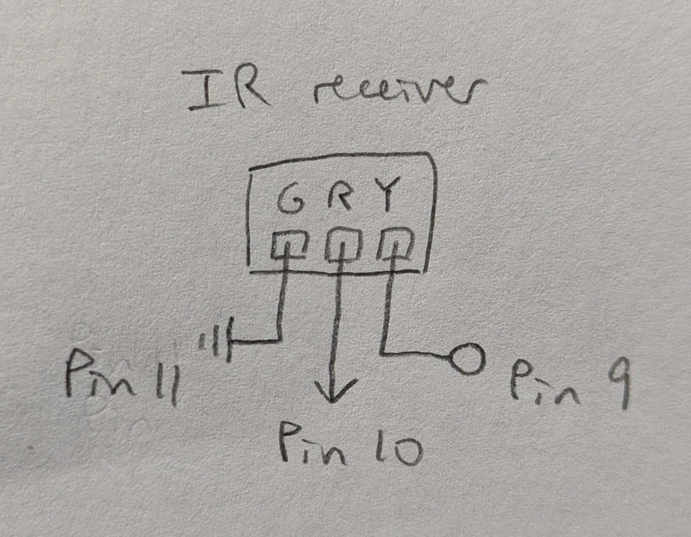

Proposal: Study Watcher

- Project Concept/Motivation:
- Sometimes I lose track of time and don't notice when it's really cold in my room while I'm studying, so the thermometer part will light up when it gets too cold in the room and the stopwatch part will help me use time blocks to stay focused while studying.
- Anticipated Bill of Materials:
- Thermistor: temperature sensing
- Pushbutton: to start stopwatch
- RGB LEDs: visual output for both parts
- Resistors: for current-limiting
- Timeline:
- Mon Nov 24: schematic, functional circuit completed
- Mon Dec 1: physical components completed
- Mon Dec 8: project materials completed
- Contingency Plans:
- If something goes wrong with the thermistor, I will replace it with a photocell.
Pivot
For the above idea, it seemed like the sensors would be hard to test and calibrate in real time, so I wanted to do something that would be more feasible to debug. Also, I wanted to incorporate more coding, but this idea didn't involve a lot of that.
Proposal: Minesweeper

- Project Concept/Motivation:
- I had coded Minesweeper in Java in the console in 2022, and I had always wanted to add a more fleshed out visual interface to it. With this project, I will also add a separate game controller, which is always nice to have to be able to play with a dedicated input device.
- Anticipated Bill of Materials:
- Joystick: direction and dig inputs
- Button: flag input
- Resistor: for button
- Timeline:
- Mon Nov 24: schematic, functional circuit completed
- Mon Dec 1: website, game functionality completed
- Mon Dec 8: project materials completed
- Contingency Plans:
- If the joystick does not work well for my purposes, I will experiment with other input components, like potentiometers and other switches.
- I will implement features in the game functionality as time allows, working up from the most essential.
Minesweeper
Description
Plays a modified version of minesweeper.
- same as normal minesweeper:
- 9x9 board with 10 mines randomly planted (beginner difficulty)
- restart the game at any time
- remaining mines and seconds passed timer display
- smiley for indicating game state
- different:
- when you hit a mine, the timer stops as normal,
but you can keep going and solve the rest of the board
- the mouse hold smiley is instead used
to indicate "winning" after already losing
Takes inputs from keyboard and Arduino through serial comm
Keyboard:
- r: restart
- e: dig
- f: flag
- WASD or arrow keys: move
Arduino:
- 7 buttons on infrared remote:
VOL+
|<< >|| >>|
v VOL- ^
- corresponding to:
up
left down right
dig flag restart
The IR receiver sends the value received on each relevant
button press, and otherwise a continuous stream to indicate
that no button was just pressed.
The red indicator light on the receiver blinks when a signal is received.
The IR receiver is connected to pin 9,
receives power through pin 10,
and is connected to ground at pin 11.
Development Notes
- I started with a joystick using the built-in switch and then 1 other button, but often pressing the joystick would move it as well, so I changed to 2 button switches and stopped using the built-in switch.
- I started with moving the joystick a distance from the center would move the cursor 1 cell in that direction, but the input was too sensitive, so I changed to a linear mapping for the full range of motion of the joystick to the dimensions of the board.
- With mapping, it was still too sensitive and the response speed was too high, so I changed to 2 separate twist knob potentiometers instead of having them combined in the joystick.
- On the contrary, the response speed for the potentiometers was too low, and the 2 potentiometers also felt like an unintuitive, unfamiliar interaction for moving around a board, so I decided to use an infrared remote. I would have used button switches for each, but I did not have access to that many buttons, and mounting the buttons on a casing would be much more complex, so the remote was a better option.
- In terms of coding the game functionality, I was using coordinate point arrays as elements in my sets, so two arrays with the same values in them would be considered as different and both be added to the set, because sets compare elements by object references and not contents, so the best solution for me was to convert the 2 values into 1 string and use that for set elements instead. The same applied for map keys.
- At first the board had no HUD, so there was no feedback when a game was won, so I added the smiley back in. Since that meant the HUD was there, I added the other two parts of it (mines, timer) as well. The mines count is sometimes needed to determine mine locations near the end of a game, but the timer is just for fun.
- I started with only the arrow keys for inputs and an intuitive d for dig, but I wanted to be able to play with one hand, so I added WASD along with the arrow keys and changed d into e for dig.
Schematic
Instead of the built in GND and 5V pins, I used pin 11 and pin 10, which were adjacent to the input pin 9, so the wiring would be more secure inside the product casing.
Circuit


Firmware
link to code file
/**
* Minesweeper.ino
*
* with help from
* https://www.circuitbasics.com/arduino-ir-remote-receiver-tutorial/
*
* The IR receiver sends the value received on each relevant
* button press, and otherwise a continuous stream to indicate
* that no button was just pressed.
* The red indicator light on the receiver blinks when a signal
* is received.
*
* The IR receiver is connected to pin 9,
* receives power through pin 10,
* and is connected to ground at pin 11.
*
* 2025 December 03
* Heidi Wang
*/
// IRremote version 2.6.0
#include
// IR receiver pin
const int RECV_PIN = 9;
// initialize receiver object
IRrecv irrecv(RECV_PIN);
// initialize results object
decode_results results;
const int powerPin = 10;
const int groundPin = 11;
// setup function
void setup() {
// begin serial comm
Serial.begin(9600);
// enable receiver
irrecv.enableIRIn();
// blinks receiver LED when receiving signal
irrecv.blink13(true);
// initialize the pin for power as an output
pinMode(powerPin, OUTPUT);
// set voltage to HIGH to provide power
digitalWrite(powerPin, HIGH);
pinMode(groundPin, OUTPUT);
digitalWrite(groundPin, LOW);
}
// loop function
void loop() {
// on receiving input
if (irrecv.decode(&results)) {
// print the IR code received
// Serial.println(results.value, HEX);
// VOL+
if (results.value == 0xFF629D) {
Serial.println(results.value);
}
// |<< seek left
if (results.value == 0xFF22DD) {
Serial.println(results.value);
}
// >|| play/pause
if (results.value == 0xFF02FD) {
Serial.println(results.value);
}
// >>| seek right
if (results.value == 0xFFC23D) {
Serial.println(results.value);
}
// v down
if (results.value == 0xFFE01F) {
Serial.println(results.value);
}
// VOL-
if (results.value == 0xFFA857) {
Serial.println(results.value);
}
// ^ up
if (results.value == 0xFF906F) {
Serial.println(results.value);
}
// reset the receiver to receive the next code
irrecv.resume();
} else {
Serial.println(0xFFFFFF);
delay(50);
}
}
Web


Web Code
link to code file
/**
* minesweeper.js
*
* with help from servo-with-gui index.js by Blair Subbaraman
* 7-segment display bold font from https://www.keshikan.net/fonts-e.html
*
* Plays a modified version of minesweeper.
* - same as normal minesweeper:
* - 9x9 board with 10 mines randomly planted (beginner difficulty)
* - restart the game at any time
* - remaining mines and seconds passed timer display
* - smiley for indicating game state
* - different:
* - when you hit a mine, the timer stops as normal,
* but you can keep going and solve the rest of the board
* - the mouse hold smiley is instead used
* to indicate "winning" after already losing
*
* Takes inputs from keyboard and Arduino through serial comm
* Keyboard:
* r: restart
* e: dig
* f: flag
* WASD or arrow keys: move
* Arduino:
* 7 buttons on infrared remote:
* VOL+
* |<< >|| >>|
* v VOL- ^
* corresponding to:
* up
* left down right
* dig flag restart
*
* 2025 December 03
* Heidi Wang
*/
// this should match the baud rate in your Arduino sketch
const BAUD_RATE = 9600;
// these are used for setting up the serial connection
let port, connectBtn;
// game variables
const n = 9, m = 9; // [0--(n-1), 0--(m-1)] board size
const mineTotal = 10;
const imgSize = 50; // size to draw each cell
let originX; // top left corner of top left cell
let originY;
let minePositions; // {"x,y"}
let uncovered; // {"x,y": n}
let flagged; // {"x,y"}
let minesHit; // {"x,y"}
let currCell; // [x,y]
let currCellStr; // for set/map keys
let currImg; // img object
// translated input from Arduino
let inputAction;
// timing
let startTime, endTime; // ms
let started, ended; // T/F state markers to track time
// assets
// images for:
let img = []; // uncovered cells with n adjacent mines
let imgCovered;
// let imgMine; // mines the player didn't flag are marked after loss
let imgMineHit; // red bg
let imgFlagged;
// let imgFlaggedWrong; // non-mines the player flagged are marked after loss
let imgBG; // the border with the HUD sections
// status faces; mousehold used for "winning" after already losing
let imgFacePlaying, imgFaceWin, imgFaceLose, imgFaceMouseHold;
let HUDFont; // 7-segment display bold font
/**
* loads assets before setup
* the sketch only begins once preload is finished
* load_ functions are guaranteed to finish loading or raise an error
*/
function preload() {
img[0] = loadImage('assets/minesweeper_0.jpg');
img[1] = loadImage('assets/minesweeper_1.jpg');
img[2] = loadImage('assets/minesweeper_2.jpg');
img[3] = loadImage('assets/minesweeper_3.jpg');
img[4] = loadImage('assets/minesweeper_4.jpg');
img[5] = loadImage('assets/minesweeper_5.jpg');
img[6] = loadImage('assets/minesweeper_6.jpg');
img[7] = loadImage('assets/minesweeper_7.jpg');
img[8] = loadImage('assets/minesweeper_8.jpg');
imgCovered = loadImage('assets/minesweeper_9_covered.jpg');
// imgMine = loadImage('assets/minesweeper_10_mine.jpg');
imgMineHit = loadImage('assets/minesweeper_11_mine_hit.jpg');
imgFlagged = loadImage('assets/minesweeper_12_flag.jpg');
// imgFlaggedWrong = loadImage('assets/minesweeper_13_flag_not.jpg');
imgBG = loadImage('assets/bg.png');
imgFacePlaying = loadImage('assets/face_playing.jpg');
imgFaceWin = loadImage('assets/face_win.jpg');
imgFaceLose = loadImage('assets/face_lose.jpg');
imgFaceMouseHold = loadImage('assets/face_mouse_hold.jpg');
HUDFont = loadFont('assets/DSEG7Classic-Bold.ttf');
}
/**
* runs once after preload before draw
* - sets up the serial connection
* - creates the canvas and draws the background
* - calculates the position of the origin
* - calls setupBoard() to set up the board for a new game
*/
function setup() {
// Run the serial setup function
setupSerial();
// Create the canvas
createCanvas(windowWidth, windowHeight);
// draw background
background(192, 192, 192);
originX = (windowWidth - imgSize * n) / 2;
originY = (windowHeight - imgSize * m) / 2 + 7 * m;
setupBoard();
}
/**
* initializes/resets the board for a new game
* - resets the board to empty
* - plants new mines
* - resets the timer variables
* - resets the HUD and cursor
*/
function setupBoard() {
// draw board border
image(imgBG,
originX - imgSize * 0.72, originY - imgSize * 3.38,
imgSize * n * 1.165, imgSize * m * 1.45);
// draw board cells
for (let i = 0; i < n; i++) {
for (let j = 0; j < m; j++) {
drawCell([i,j], imgCovered);
}
}
minePositions = new Set(); // {"x,y"}
uncovered = new Map(); // {"x,y": n}
flagged = new Set(); // {"x,y"}
minesHit = new Set(); // {"x,y"}
// plant mines
while (minePositions.size < mineTotal) {
let mineX = Math.floor(Math.random() * n);
let mineY = Math.floor(Math.random() * m);
if (minePositions.has(mineX + ',' + mineY)) {
continue;
}
minePositions.add(mineX + ',' + mineY);
}
startTime = 0, endTime = 0;
started = false, ended = false;
// draw HUD
drawFace(imgFacePlaying);
drawFlagCt();
drawTime();
// starts the cursor in the middle of the board
currCell = [int(n / 2), int(n / 2)]; // [4,4]
currCellStr = currCell[0] + ',' + currCell[1];
currImg = imgCovered;
drawCursor();
}
/**
* loops indefinitely after setup is done
* takes input from the Arduino
* calls the corresponding function for each of the 7 inputs
* - restart: setupBoard()
* - dig: dig()
* - flag: flag()
* - 4 directions: moveCursor() with the corresponding parameters
* updates the timer
*/
function draw() {
// read any data coming in from Arduino
receiveData();
// process Arduino inputs
if (inputAction == 'restart') {
setupBoard();
}
if (inputAction == 'dig') {
dig();
}
if (inputAction == 'flag') {
flag();
}
if (inputAction == 'up') {
moveCursor('y', -1);
}
if (inputAction == 'left') {
moveCursor('x', -1);
}
if (inputAction == 'down') {
moveCursor('y', 1);
}
if (inputAction == 'right') {
moveCursor('x', 1);
}
// update timer
if (started && !ended) {
endTime = millis() - startTime;
drawTime();
}
}
/**
* called on keypress
* calls the same functions as in draw
* but for the corresponding keyboard inputs
*/
function keyPressed() {
if (key === 'r') {
setupBoard();
}
if (key === 'e') {
dig();
}
if (key === 'f') {
flag();
}
if (keyCode === UP_ARROW || key === 'w') {
moveCursor('y', -1);
}
if (keyCode === LEFT_ARROW || key === 'a') {
moveCursor('x', -1);
}
if (keyCode === DOWN_ARROW || key === 's') {
moveCursor('y', 1);
}
if (keyCode === RIGHT_ARROW || key === 'd') {
moveCursor('x', 1);
}
}
/**
* uncovers the current cell if it is covered and non-flagged
* - ends the game if a mine was hit
* - redraws the current cell and cursor over it
* - draws the lose smiley
* - stops the timer
* - calls uncoverBlob() to uncover adjacent cells as needed starting from
* the current cell
* - redraws the cursor over the current cell
* - if the last safe cell has been uncovered,
* - draws the win smiley and stops the timer if no mines have been hit
* - draws the mousehold smiley otherwise
* updates the timer for when the game was started if this was the first move
*/
function dig() {
if (!(uncovered.has(currCellStr) || flagged.has(currCellStr))) {
if (minePositions.has(currCellStr)) {
minesHit.add(currCellStr);
drawCurrCell();
drawCursor();
drawFace(imgFaceLose);
if (!ended) {
ended = true;
}
return;
} else {
uncoverBlob([currCell]);
drawCursor();
console.log(uncovered.size, minesHit.size, n * m - mineTotal);
if (uncovered.size == n * m - mineTotal) {
if (!minesHit.size) {
drawFace(imgFaceWin);
ended = true;
} else {
drawFace(imgFaceMouseHold);
}
}
}
console.log();
}
if (!started) {
startTime = millis();
started = true;
}
}
/**
* uncovers all covered, non-flagged cells adjacent to the cells
* in the cellsToExplore array of cells [x,y]
* until every cell uncovered has a non-zero number of adjacent mines
* - calls countAdjacentMines() to
* - add new adjacent cells to be uncovered to cellsToExplore
* - determine the number of adjacent mines for the correct image to use
* - redraws each cell with the corresponding image
* @param {[[int, int]]} cellsToExplore - the cells to uncover
*/
function uncoverBlob(cellsToExplore) {
while (cellsToExplore.length) {
let k = cellsToExplore.pop();
let kStr = k[0] + ',' + k[1];
let [adjacentCells, n] = countAdjacentMines(k);
uncovered.set(kStr, img[n]);
drawCell(k, img[n]);
if (n == 0) {
cellsToExplore = cellsToExplore.concat(adjacentCells);
}
}
}
/**
* searches the cells adjacent to cell k for mines
* returns an array of size 2 containing
* - all covered non-flagged adjacent cells [x,y] that were searched
* - the number of mines adjacent to k
* @param {[int, int]} k - the cell to search around
* @returns {[[int, int], int]} adjacent cells, the number of adjacent mines
*/
function countAdjacentMines(k) {
let [x, y] = k;
let adjacentMines = 0;
let adjacentCells = [];
for (let i = x - 1; i <= x + 1; i++) {
for (let j = y - 1; j <= y + 1; j++) {
let ijStr = i + ',' + j;
if (!(i < 0 || j < 0 || i >= n || j >= m ||
uncovered.has(ijStr) || flagged.has(ijStr))) {
adjacentCells.push([i, j]);
}
if (minePositions.has(ijStr)) {
adjacentMines++;
}
}
}
return [adjacentCells, adjacentMines];
}
/**
* flags or unflags the current cell depending on its state,
* only if it is covered, and redraws the cursor over it
* updates the flag counter
* updates the timer for when the game was started if this was the first move
*/
function flag() {
if (!uncovered.has(currCellStr)) {
if (!flagged.has(currCellStr)) {
flagged.add(currCellStr);
} else {
flagged.delete(currCellStr);
}
drawFlagCt();
drawCurrCell();
drawCursor();
}
if (!started) {
startTime = millis();
started = true;
}
}
/**
* moves the cursor in the given direction
* - redraws the current cell to cover the cursor
* - moves the current cell
* - draws the cursor over the new current cell
* @param {char in {'x', 'y'}} axis - the axis on which to move
* @param {int in {-1, 1}} dir - the direction to move on the axis
*/
function moveCursor(axis, dir) {
drawCurrCell();
if (axis == 'x' && dir == -1) {
currCell = [max(0, currCell[0] + dir), currCell[1]];
}
if (axis == 'x' && dir == 1) {
currCell = [min(n - 1, currCell[0] + dir), currCell[1]];
}
if (axis == 'y' && dir == -1) {
currCell = [currCell[0], max(0, currCell[1] + dir)];
}
if (axis == 'y' && dir == 1) {
currCell = [currCell[0], min(m - 1, currCell[1] + dir)];
}
currCellStr = currCell[0] + ',' + currCell[1];
drawCursor();
}
/**
* draws the given image in the position of the given cell
* @param {[int, int]} cell - the position of the cell
* @param {p5.Image} img - the image to draw in the cell
*/
function drawCell(cell, img) {
image(img, cellX(cell), cellY(cell), imgSize, imgSize);
}
/**
* updates the image currImg to correspond to the current cell currCell
*/
function updateCurrImg() {
if (minesHit.has(currCellStr)) {
currImg = imgMineHit;
} else if (flagged.has(currCellStr)) {
currImg = imgFlagged;
} else if (uncovered.has(currCellStr)) {
currImg = uncovered.get(currCellStr);
} else {
currImg = imgCovered;
}
}
/**
* calls updateCurrImg() to update the current image and
* drawCell(currCell, currImg) to draw the current cell
*/
function drawCurrCell() {
updateCurrImg();
drawCell(currCell, currImg);
}
/**
* draws the cursor, a yellow border around the current cell
*/
function drawCursor() {
noFill();
stroke('yellow');
strokeWeight(4);
strokeJoin(MITER);
square(cellX(currCell) + 2, cellY(currCell) + 2, imgSize - 4);
}
/**
* calculates the x position, used for drawing the current cell
* @param {[int, int]} cell - the cell to calculate the x position for
* @returns {int} the calculated x position
*/
function cellX(cell) {
return originX + imgSize * cell[0];
}
/**
* calculates the y position, used for drawing the current cell
* @param {[int, int]} cell - the cell to calculate the y position for
* @returns {int} the calculated y position
*/
function cellY(cell) {
return originY + imgSize * cell[1];
}
/**
* draws the given smiley in the correct position
* @param {p5.Image} img - the smiley to draw
*/
function drawFace(img) {
image(img, originX + imgSize * 3.78, originY - imgSize * 2.43,
imgSize * 1.496, imgSize * 1.496);
// noStroke();
// fill('green');
// square(,,);
}
/**
* draws a background for the flag count and then the count in the HUDFont
*/
function drawFlagCt() {
// bg
fill('black');
noStroke();
rect(originX + imgSize * 0.3, originY - imgSize * 2.4,
imgSize * 2.4, imgSize * 1.4);
// value
fill('red');
textFont(HUDFont, 48);
textAlign(CENTER, CENTER);
text(String(max(0, mineTotal - flagged.size)).padStart(3, '0'),
originX + imgSize * (0.3 + 2.4 / 2), originY - imgSize * (2.4 - 1.4 / 2));
}
/**
* draws a background for the timer and then the timer in the HUDFont
*/
function drawTime() {
// bg
fill('black');
noStroke();
rect(originX + imgSize * (n - 0.25 - 2.4), originY - imgSize * 2.4,
imgSize * 2.4, imgSize * 1.4);
// value
fill('red');
textFont(HUDFont, 48);
textAlign(CENTER, CENTER);
text(String(min(999, int(endTime/1000))).padStart(3, '0'),
originX + imgSize * (n - 0.25 - 2.4 / 2), originY - imgSize * (2.4 - 1.4 / 2));
}
/**
* Receive data over serial from your Arduino
* We're terminating data with a newline character here
* i.e., we need to Serial.println() in our Arduino code
*
* then maps the input reading to a corresponding string inputAction
* to be used in draw
*/
function receiveData() {
// Check whether the port is open (see checkPort function below)
const portIsOpen = checkPort();
// If the port is not open, stop drawing for this run of the loop
if (!portIsOpen) return;
// Read from the port until the newline
let str = port.readUntil("\n");
// If we didn't read anything, stop drawing for this run of the loop
if (str.length == 0) return;
// Trim the whitespace (the newline) and convert the string to a number.
let inputRead = Number(str.trim());
// Translate the reading into a meaningful string.
let actions = new Map();
actions.set(0xFF629D, 'up');
actions.set(0xFF22DD, 'left');
actions.set(0xFF02FD, 'down');
actions.set(0xFFC23D, 'right');
actions.set(0xFFE01F, 'dig');
actions.set(0xFFA857, 'flag');
actions.set(0xFF906F, 'restart');
actions.set(0xFFFFFF, undefined);
inputAction = actions.get(inputRead);
}
// Three helper functions for managing the serial connection.
function setupSerial() {
port = createSerial();
// Check to see if there are any ports we have used previously
let usedPorts = usedSerialPorts();
if (usedPorts.length > 0) {
// If there are ports we've used, open the first one
port.open(usedPorts[0], BAUD_RATE);
}
// Create a connect button
connectBtn = createButton("Connect to Arduino");
// Position the button in the top left of the screen.
connectBtn.position(5, 5);
// When the button is clicked, run the onConnectButtonClicked function
connectBtn.mouseClicked(onConnectButtonClicked);
}
function checkPort() {
if (!port.opened()) {
// If the port is not open, change button text
connectBtn.html("Connect to Arduino");
// Set background to gray
// background("gray");
return false;
} else {
// Otherwise we are connected
connectBtn.html("Disconnect");
return true;
}
}
function onConnectButtonClicked() {
// When the connect button is clicked
if (!port.opened()) {
// If the port is not opened, we open it
port.open(BAUD_RATE);
} else {
// Otherwise, we close it!
port.close();
}
}
Full Project
link to website